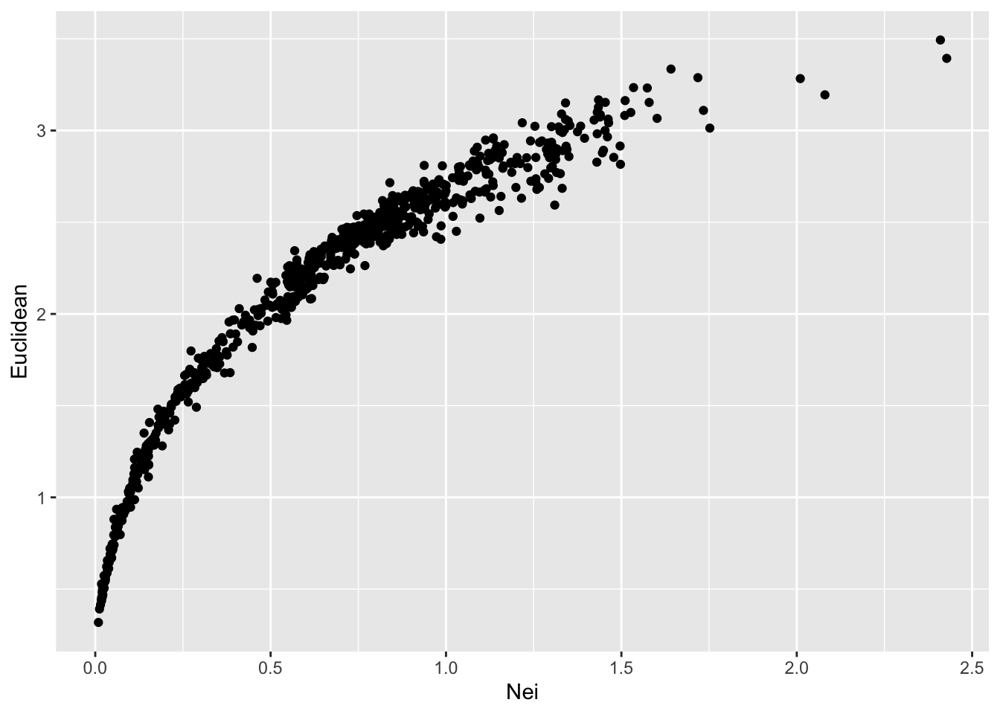
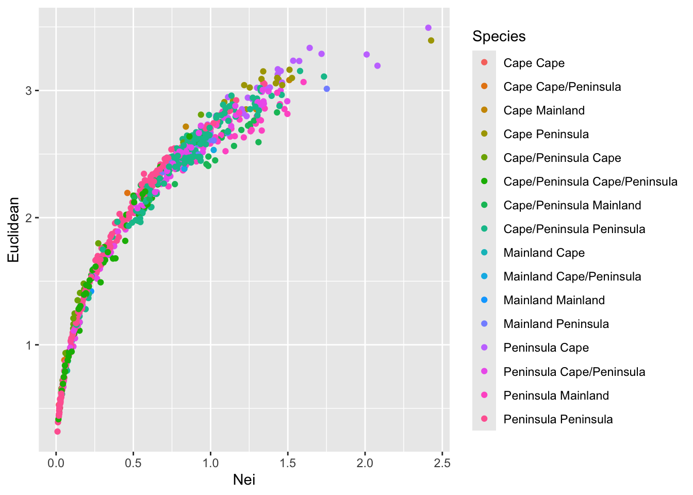
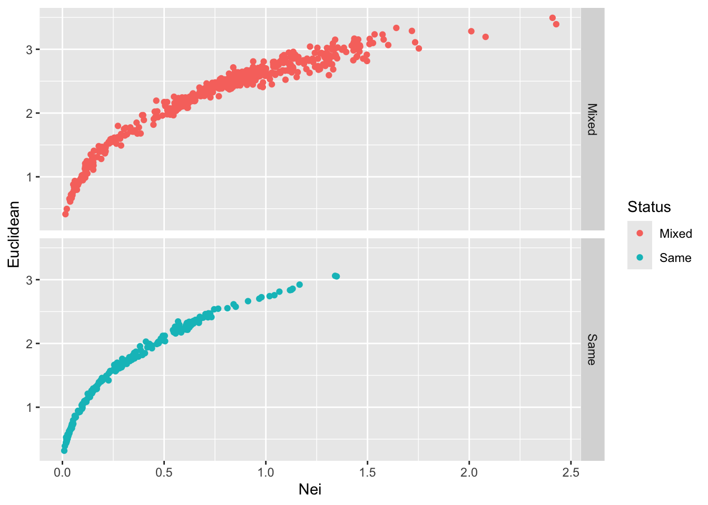
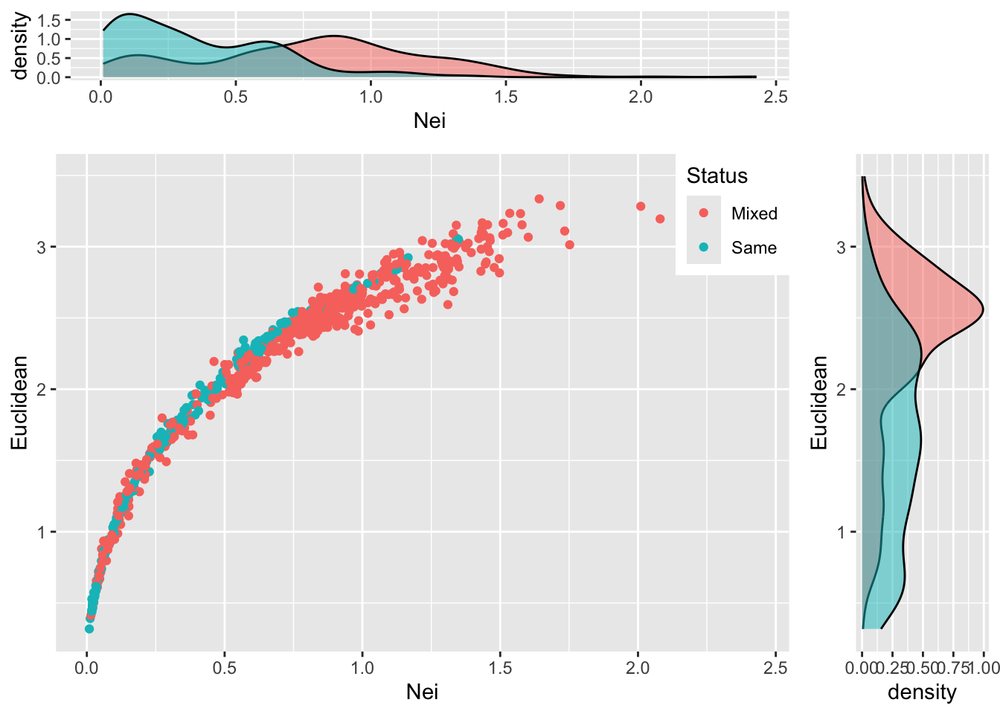

library(gstudio)
data(arapat)
D1 <- genetic_distance(arapat,stratum = "Population",mode = "Nei")
D2 <- genetic_distance(arapat,stratum = "Population",mode = "Euclidean")25 Distance Matrices

It is often common in population genetics to estimate pairwise distance matrices representing difference in quantities such as spatial location, phenological overlap, genetic differentiation, ecological separation. Dealing with distances is fraught with problems and continues to be an area of active research. This chapter focuses on how we can create, manipulate, and analyze distance matrices.
In this section, we examined several different ways in which we can estimate pairwise genetic distances. In this section, we examine ways in which we can gain some statistical confidence in the way that we can compare the components of genetic matrices.
In the discussion below, we will be comparing estimates of population-level genetic distance as determined using both Nei’s genetic distance and Euclidean based upon allele frequencies.
25.1 Visual Comparisons
At a first pass, the most parsimonious approach to understanding the relationship between elements of two matrices would be to plot them. To visualize, we only need the lower (or upper) triangle of each matrix since they are symmetric.
Nei Euclidean
Min. :0.009049 Min. :0.3182
1st Qu.:0.250710 1st Qu.:1.5684
Median :0.633049 Median :2.2668
Mean :0.645306 Mean :2.0703
3rd Qu.:0.937829 3rd Qu.:2.6145
Max. :2.427508 Max. :3.4936 ggplot(df,aes(x=Nei,y=Euclidean)) + geom_point()
From this, we can see that both methods produce a set of distances that are largely similar, though not linear. Remember that Nei’s distance is linear in time only in relation to mutation drift equilibrium.
So lets expand on this output a bit. As we’ve seen in this dataset, there are at least three different groups in the data that have been designated as different ‘species’ using mtDNA (see Garrick et al. 2013 for more on this). It would be helpful if the way in which we plot these population comparisons would indicate if the comparisons were among the same species groups or among different species groups. Are the larger estimates of genetic distance more likely between these species groups?
To do this, we need to collapse the values in arapat$Species by population.
assignments <- by( arapat$Species, arapat$Population, unique)This gives a list of values for each population of the unique entries from arapat$Species. Some populations are completely one type
assignments[1]$`101`
[1] Mainland
Levels: Cape Mainland Peninsulawhereas others are mixed between two types of species
assignments[6]$`157`
[1] Cape Peninsula
Levels: Cape Mainland PeninsulaTo capture the different combinations of groupings, we can define a small function that takes the species designations and concatenates them together—instead of having a 2-element vector of “Cape” and “Peninsula” for population 157, we have a “Cape/Peninsula” designation. To prevent “Cape/Peninsula” and “Peninsula/Cape” from being different just due to the order in which they are found in the data.frame, I sort them first.
foo <- function( x ) { return( paste( sort( unique(x) ) , collapse="/") ) }
assignments <- by( arapat$Species, arapat$Population, foo)
assignments[1] 101
"Mainland" assignments[6] 157
"Cape/Peninsula" This gives us a vector of species composition equal in length to the number of populations in the data set. However, the comparisons we are making are not based on the number of populations, they are based upon the pair-wise comparison of populations. In these data, we have 39 populations but the scatter plot of pairwise comparisons in genetic distance has \(\frac{39(39-1)}{2} = 741\) points on it. As a result, we need to take this vector of assignments and create a pairwise comparison. We can do this using the outer() function, which allows us to take two vectors of equal length and perform some operation on them to produce a square matrix. This is exactly how vector multiplication works, only instead of multiplying vectors of numbers, we can tell it to paste together the assignments.
assignments <- as.character( assignments)
C <- outer( assignments, assignments, FUN=paste)
C[1:3,1:3] [,1] [,2] [,3]
[1,] "Mainland Mainland" "Mainland Mainland" "Mainland Peninsula"
[2,] "Mainland Mainland" "Mainland Mainland" "Mainland Peninsula"
[3,] "Peninsula Mainland" "Peninsula Mainland" "Peninsula Peninsula"Now we can plot it as normal.
df$Species <- C[ lower.tri(C) ]
ggplot(df,aes(x=Nei,y=Euclidean, color=Species)) + geom_point()
which produces a somewhat confusing melange of output. Perhaps all potential combinations provide a little too much information to see overall trends. Perhaps it is sufficient to partition the points into comparisons among populations that are of the same composition from those that are comparing different species compositions.
df$Status <- df$Species
df$Status[ df$Species == "Cape Cape"] <- "Same"
df$Status[ df$Species == "Mainland Mainland"] <- "Same"
df$Status[ df$Species == "Peninsula Peninsula"] <- "Same"
df$Status[ df$Status != "Same" ] <- "Mixed"
ggplot(df,aes(x=Nei,y=Euclidean, color=Status)) + geom_point() + facet_grid(Status~.)

Given the density of the plots and the relative numbers of them (there are more Mixed than Same) plotting the data like this may not reveal all the underlying trends. Another way to augment this graphical output would be to add marginal density distributions to the plot. To do this, we can create a grid of plots using the ggExtra grid.arrange() function. To do this, we need to create a few different plots and then put them together into a single output. A single scatter plot will have both types of points in it.
Then we need to create the density for Nei’s distance to be plot on top of the scatter plot
plot_top <- ggplot( df, aes(x=Nei,fill=Status)) + geom_density(alpha=0.5) + theme(legend.position="none")and the corresponding one for the Euclidean distance (notice I’m flipping the coordinates here because I want the density to be along the right side of the graph to mirror the y-axis.
plot_side <- ggplot( df, aes(x=Euclidean, fill=Status)) + geom_density(alpha=0.5) + coord_flip() + theme(legend.position="none")I also need an empty plot to since we are going to make a 2x2 grid of plots but the upper right one will have nothing in it (the popgraph library has a nice invisible theme called theme_empty()).
library(popgraph)
empty <- ggplot() + theme_minimal()Finally, we can stitch this all together and produce a single plot with these four subcomponents.
library(gridExtra)
grid.arrange(plot_top, empty, scatter, plot_side, ncol=2, nrow=2, widths=c(4,1), heights=c(1,4))

25.2 The Mantel Test
By far, the most common approach for estimating the relative similarity in two matrices is through the use of a Mantel Test. This test was originally developed, by Nathan Mantel, to estimate the correlation between two matrices, \(\bfseries{X}\) and \(\bfseries{Y}\). The idea here is that if there is a positive association between the elements in each matrix, then the large values in \(\bfseries{X}\) will be matched up with large values in \(\bfseries{Y}\) and the small values in \(\bfseries{X}\) will be matched up with the small values in \(\bfseries{Y}\). Conversely, if there is a negative relationship between the two, the large values in \(\bfseries{X}\) are matched with the small values in \(\bfseries{Y}\) and vice-versa. As such, we estimate the sum of the multiplication between each of the corresponding elements in these matrices (assuming they are both square and have \(N\) rows and columns) as:
[ Z = {i=1}^N{j=1}^N x_{ij}y_{ij} ]
The expected value of \(Z\) is unknown since the forces that shape the relationship between these two matrices is largely unknown. As a consequence, we cannot look up a value of \(Z\) to determine its probability. However, we can use our old friend permutation to set up some simulations that may help out understanding if the estimated value of \(Z\) is small or large, given potential values it could take on with these two matrices. So what we do is take one of the matrices and shuffle the rows and columns and estimate permuted values of [~] and then compare our observed estimate to these permuted values. Again, like we did in the section on rarefaction, we take the null hypothesis, \(H_O:\) There is no relationship between elements of these two matrices, and assume it is true. If it is in fact true, then any permutation of one of the matrices should produce values of \(\tilde{Z}\) as large in magnitude as any other permutation. It is only where we have significant correlations, either positive or negative, between the matrices that we have values of \(\tilde{Z}\) very large or very small. Therefore, we should be able to define a level of confidence in the magnitude of our observed \(Z\) by defining a large set of permuted \(\tilde{Z}\) values and comparing them. This is exactly how it is done1.
In a paper by Smouse et al. (1986), they showed that this approach is basically just another way of doing a partial regression analysis. The importance of this observation is that while a particular value of \(Z\) may be examined for significance, it is a scaleless entity and varies with the magnitude of the values in the individual matrices. As such, it is difficult to interpret. Is \(Z=116\) a large value? However, if interpreted in a regression context, we can estimate scaled parameters such as the partial correlation coefficients. The math is pretty easy here. The sums of squares for both \(\bfseries{X}\) and \(\bfseries{X}\) are found as:
[ SS_X = {i=1}^N{j=1}^N(x_{ij} - {x})^2 ]
and
[ SS_X = {i=1}^N{j=1}^N(x_{ij} - {x})^2 ]
where \(\bar{x} = \frac{\sum_{i=1}^N\sum_{j=1}^N x_{ij}}{N(N-1)}\) and \(\bar{y} = \frac{\sum_{i=1}^N\sum_{j=1}^N y_{ij}}{N(N-1)}\), and the sums of cross products are defined as:
[ SS_{XY} = Z - N{x}{y} ]
This means that the correlation coefficient is
[ = ]
which is essentially the Pearson product moment correlation coefficient! How convenient. They go on to extend this work to show how if there are more than one ‘predictor’ matrix here, we can also derive the partial correlation coefficients, \(\rho_{x_1|x_2}\) (e.g., the coorelation of \(x_1\) after fixing the effects of \(x_2\)) and other useful components. In R, we have this kind of work done for us rather easily. There are several packages that provide a Mantel test, we will use the one out of the vegan package.
In this example, the distance matrices must first be translated into dist objects (a type of symmetrical matrix).
Mantel statistic based on Pearson's product-moment correlation
Call:
mantel(xdis = as.dist(D1), ydis = as.dist(D2), permutations = 9999)
Mantel statistic r: 0.9373
Significance: 1e-04
Upper quantiles of permutations (null model):
90% 95% 97.5% 99%
0.0718 0.0957 0.1166 0.1423
Permutation: free
Number of permutations: 9999From this output, we see that the two distance matrices are highly correlated. The question that I’ll leave the reader to look at is one based upon the shape of all those pairwise graphs. Is this a linear relationship? Is it ok to use a Pearson correlation on these data?
Recent work by Legendre & Fortin (2010) has suggested that in some situations the use of a Mantel test results in bias assocaited with ascertaining probabilities.
And coincidently, how much of the statistical testing is done in population genetics since we have no idea what the underlying distributions are expected to be.↩︎